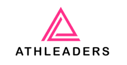

FMCG D2C · Strategy · Creative Direction · Analytics
Built on their instincts, sharpened by ours.
The founders of BTWN came to us with many of the answers already taking shape. Two experienced female founders, a product line they knew inside and out with almost two decades of direct client experience, and a clear sense of what they wanted the brand to become. What they were looking for was a sounding board.
We worked alongside them rather than in front of them. The founders had a strong sense of what BTWN should sound like, so we sharpened it and turned it into language they could carry across channels. We coached them through their first run of socials and events, and sequenced an online/offline play — country-wide pop-ups and targeted digital media amplifying each other.
BTWN is a hair-care (and now sun-care) brand for tweens. The between years, when hair care is not a priority — yet.
Growth wasn't hockey-stick-shaped. It was steady, and the founders were relentless. By the end of our engagement, the BTWN team had restructured, expanded its online/offline presence, and even rebranded its logo in response to consumer feedback.

Fashion D2C · Strategy · Creative Direction · Analytics
Earning their digital stripes.
The Indian menswear market is worth $10.8 billion and growing. It is also, by most measures, merciless. D2C brands now spend between 30 and 40 per cent of their revenue just to be seen online.
DragonHill had more than a good product. It had years of deep experience, a customer base that came back, and craft quality most newer entrants are still working toward. What it needed was for all of that to be legible — to a consumer scrolling past a hundred options, and to a wholesale buyer deciding which brands deserve shelf space.
On the D2C website, we stripped the copy back to what the product actually earns — no inflation, no borrowed gimmicks. On social, we helped DragonHill find a narrative register that didn't chase trends. And across both, we kept one question in front of every decision: does the brand speak to the direct consumer and the business buyer in a distinct manner?
By the end, DragonHill had a more coherent voice across touchpoints and a clearer sense of how to grow in two directions.

Healthcare start-up · Strategy · Creative Direction · Analytics
An honest look in the rear-view mirror.
When we talk about being partners and transparent in our model of work, it's also worth mentioning situations when the objectives didn't quite land as desired. This was one such case — a doorstep fitness start-up with the usual challenges of client retention.
One key challenge was the business model itself. As a completely remote-only organisation with a founder-heavy approach, it was hard to build out a strong value proposition in the short engagement time.
A few things we did manage to direct: the creative direction on their socials, helping them hire remote team members, drafting a new website plan, and encouraging a shift toward B2B rather than B2C, where the challenges were systemic.
Every consulting project has takeaways. This one taught us to understand the speed of change an organisation is willing to go to — and whether a brand is 'sales' driven or takes a 'balanced' approach, because that changes how we approach the challenge.